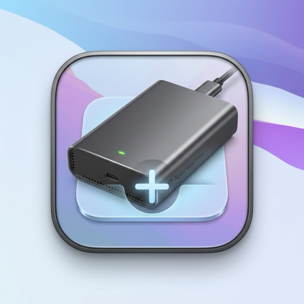
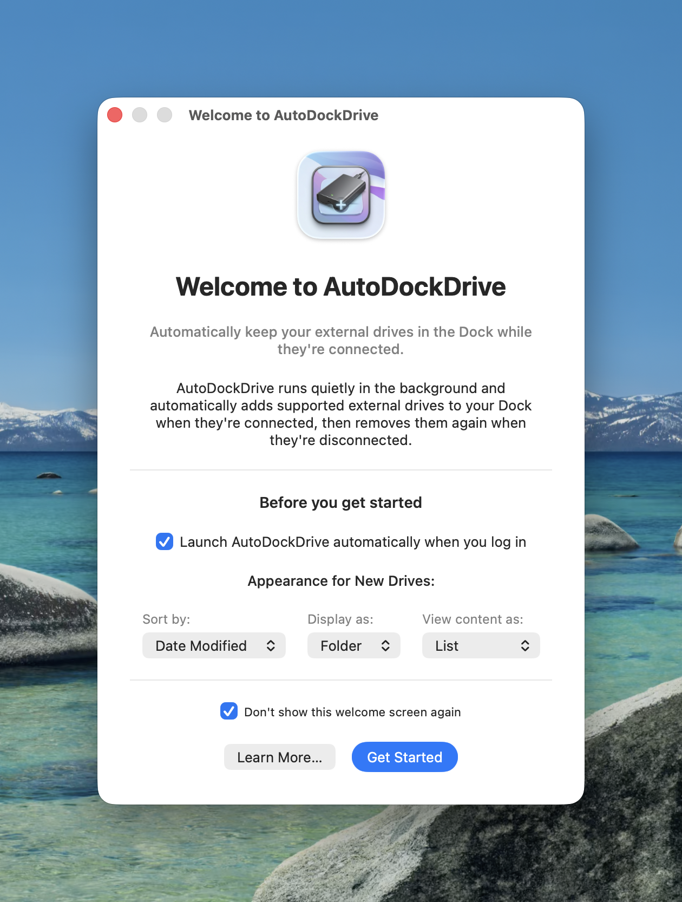
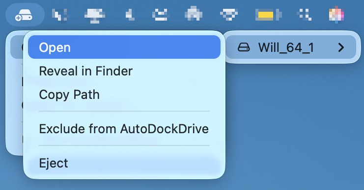
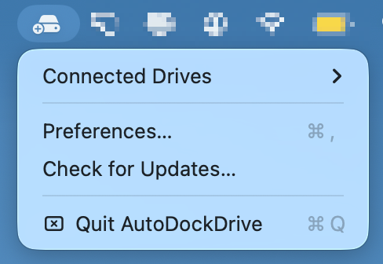

AutoDockDrive
Your external drives, right where you need them.
Automatically pins supported external drives to your Dock when connected, and removes them when ejected. Keep your desktop pristine.
brew install --cask autodockdrive
Don't have Homebrew? Install it here, or download the DMG directly using the button above.

Why I built AutoDockDrive
I created this because I was frustrated with macOS's default handling of external drives. You either have to clutter up your beautiful desktop wallpaper with drive icons, or you have to open a new Finder window just to navigate to your SD card or external SSD.
I wanted my external storage to feel like a seamless part of the OS. AutoDockDrive lives silently in the background and intelligently pins your drives to the Dock only while they are physically plugged in. When you eject them, it cleans up after itself.

Beautifully Native
Designed to feel exactly like a built-in macOS utility. Configure how drives look in the Dock with list, grid, or folder views.

Menu Bar Control
Instantly eject, open, or copy the path of connected drives directly from the menu bar—without ever opening Finder.

Smart Filtering
Automatically ignores .dmg files, app installers, and Time Machine backups so your Dock only shows what matters.
Frequently Asked Questions
Does it support both Apple Silicon (M1/M2/M3) and Intel Macs?
Yes! AutoDockDrive is a Universal Binary. It runs natively and blazing fast on both Apple Silicon and older Intel-based Macs.
Will running this in the background drain my battery?
Not at all. AutoDockDrive relies on native macOS DiskArbitration APIs. Instead of constantly checking for drives (which uses CPU), the OS simply taps AutoDockDrive on the shoulder exactly when a drive is connected. It uses essentially zero CPU while idle.
Do I have to use Homebrew to install it?
No, Homebrew is just for convenience! You can click "Download for macOS" at the top of this page to get the `.dmg` file and drag the app into your Applications folder normally.